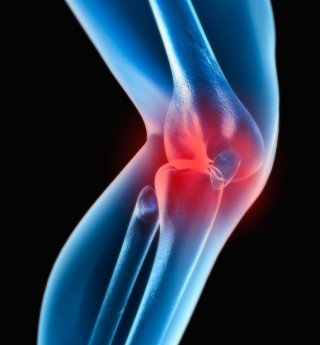
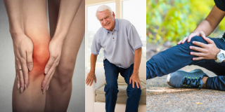
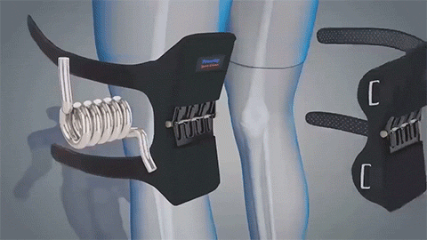
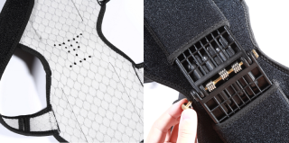

-
{{ item.title }}{{ item.text }}
ЗАКАЗАТЬ СО СКИДКОЙ 50%

Почему важно защищать коленные суставы?
На коленные суставы приходится самая высокая нагрузка, так как они не только держат весь вес человека, но и обеспечивают необходимые движения. Именно поэтому коленные суставы изнашиваются быстрее всех остальных, чаще и сильнее болят. Среди всех хирургически удаляемых суставов коленные занимают первое место.

Наколенники-стабилизаторы «Power Knee Stabilizer Pads» созданы для того, что снимать часть нагрузок с коленных суставов во время активных физических упражнений и тяжелой работе.
Оба наколенника снимают с суставов 40 кг веса, а потому суставы дольше останутся здоровыми.
Каждый наколенник имеет по 3 пружины оптимальной жесткости. Сами наколенники обеспечивают максимальный комфорт при носке и практически неощутимы.
Кому и когда рекомендуется использовать наколенники- стабилизаторы?
-
{{ item.title }}{{ item.text }}

Основные действия наколенников- стабилизаторов
- {{ item.act }}
Почему еще стоит использовать наколенники- стабилизаторы?

- {{ item.li }}